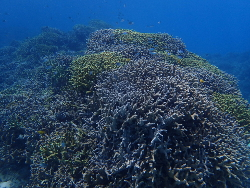

The dive sites which we visit most often are located in the Cape Manza area in central Okinawa and can be reached within minutes by boat from the port near Onna Sensui. They are among the most beautiful on Okinawa main island and offer splendid corals, breathtaking drop-offs, stunning cliff formations and a variety of small and large marine life. The famous Maeda Blue Cave is also within a short drive from our shop. Upon request, we can also organize specialized tours and visit further locations. Whatever your wishes or experience level, we will try to choose the best option for you, so that you leave us wanting to come back!
Please take a look at the description below of some of dive sites we frequent. Many others are also available!
Cape Manza Area
Nakayukui
Max. depth: 30 m
Experience level: Beginner / Intermediate
Access: Beach / Boat
Possibility to see: corals, nemo, turtles, rays
Located in the bay of Seragaki, Nakayukui is a very pleasant dive site which boasts plenty of corals at a depth of 5-15 meters with patches of beautiful white sand in between. An abundance of marine life can be spotted here, from small coral fish, to larger animals such as rays and turtles. Those who wish can also venture deeper to around 30 meters out into the sea where an old fisherman's net is the center of an interesting ecosystem. Diving Nakayukuri when it is sunny is a pure bliss. An additional bonus is that it is in a sheltered area, which means that this dive site is accessible even when others are not due to bad weather.
Manza Dream Hole
Max. depth: 40 m
Experience level: Advanced
Access: Boat
Possibility to see: cave, lobsters, scorpion fish, garden eels
This dive site is one of the gems in Okinawa. It is an L-shaped tunnel-like cave, open at both ends, which is located at the edge of the reef. The entry is at 6 meters and the diver needs to drop down vertically through a narrow opening into a large chamber. Inside the cave one can often spot huge lobsters as well as other marine life such as stone and scorpion fish. At the exit of the cave, located at 25-28meters the diver swims through a curtain of fish, which is an unforgettable experience. Those with enough air in their tanks can venture even deeper to the sandy bottom outside of the cave exit where garden eels can be found. The dive can be ended by swimming back up along the reef wall and enjoying the splendid corals at shallower depth.
Mini Dream Hole
Max. depth: 25 m
Experience level: Intermediate
Access: Boat
Possibility to see: cave, lobsters, reef sharks
For those who don’t have the skills or desire to venture into the Manza Dream Hole, a similar alternative, known as the mini dreamhole is also available. This cave is much shorter, not completely dark, and its deepest point is at approximately 18 meters, which makes it accessible to open water divers as well. However, the marine life and scenery makes it an excellent dive site even for experienced divers! A particular highlight are the corals at the entrance of the cave, the beauty of which is second to none.
Overhead Rock
Max. depth: 30 m
Experience level: Intermediate
Access: Boat
Possibility to see: pygmy seahorses, turtles, reef sharks
This dive site consists of a vertical drop from the reef and an overhang (hence the name) where often times reef sharks and large turtles are spotted. As the site is exposed, other large marine life such as rays can also be seen if you are lucky. A memorable attraction are several fan corals which are home to pygmy seahorses. There are plenty of features to be explored both at depth and in the shallower areas. In particular, two swim-throughs are inhabited by lobsters and an occasional eel can peek out of a cranny.
Coral
Max. depth: 20 m
Experience level: Intermediate
Access: Boat
Possibility to see: reef sharks, corals
This dive site is located south of Overhang and very near the famous Cape Manza cliffs, which means that you can wave at all the tourists taking pictures from the shore before you hop in the water. As the name suggests, this dive site boasts plenty of beautiful coral. In addition, it also has some interesting rock formations and beautiful white sand between the coral patches. This is definitely a dive which will make you come out of the water with a big smile!
Horseshoe
Max. depth: 40 m
Experience level: Intermediate / Advanced
Access: Beach / Boat
Possibility to see: sharks, nidubranch
This dive site combines very interesting rock formations with the possibility to spot larger marine life. It consists of a vertical drop from the reef, a large rock at a depth of 30+ meters, a giant crack in the wall, as well as two swim-throughs that spiral up from the deep. The wall is home to many octopuses and nudibranches. Large schools of fish often times swim by and the corals at shallower depth are splendid.
Horseshoe North (Toilet bowl)
Max. depth: 40 m
Experience level: Intermediate / Advanced
Access: Beach / Boat
Possibility to see: sharks, turtles
As the name suggests, this dive site is located just north of Horseshoe. It consists of a vertical wall that descends to more than 40 meters. In addition, sharks can often times be spotted in the vicinity, especially early in the morning. Luckily, these sharks are not great whites and have not caused trouble for divers. However, the biggest one is around 3 meters in length, so seeing it can definitely get your heart pumping! Even if sharks are not spotted, the scenery of this dive site is breath-taking.
Onna Point
Max. depth: 25 m
Experience level: Intermediate
Access: Beach
Possibility to see: turtles, caves
This dive site is a labyrinth of crevasses and can be a real maze if you don’t know your way around it well! It combines a lot of narrow passages, swim-throughs and tunnels. Thus, as you are diving you start getting the feeling that you are flying through a canyon! The corals in this area are also splendid and turtles are often times spotted. Definitely a recommended dive spot!
Crossline
Max. depth: 25 m
Experience level: Beginner / Intermediate
Access: Boat
Possibility to see: garden eels, nemo, corals
The name of this dive site derives from two ropes that are laid down on the sandy bottom forming a cross. In the shallower parts it boasts really healthy corals with many colorful fish. If you look carefully enough, you can often times spot octopuses as well. At depth, turtles and cuttlefish can also be seen. A particular attraction is an area where garden eels often times poke out through the sand. Like Nakayukui, this dive site is sheltered, making it accessible even in sub-optimal sea conditions.
Maeda Blue Cave
Max. depth: 10 m (cave area), 40 m (wall area)
Experience level: Beginner / Intermediate
Access: Beach / Boat
Possibility to see: cave, nemo, coral fish, people
Pretty much everyone who comes to Okinawa has heard of the Maeda Blue Cave. It is indeed an extremely beautiful spot. The area around the cave is relatively shallow making it perfect for snorkelers as well as beginner divers. The cave itself is around 3 meters deep and the incoming sunlight gives the water a fantastic emerald blue color, hence the name. South of the cave and away from all the snorkelers, there is a vertical wall which descends to more than 40 meters, making it a noteworthy dive location even for experienced divers.
Caution: Maeda Blue Cave is undoubtedly a beautiful site. However, it is heavily promoted, which means that during the summer months it is extremely crowded. This is especially true on weekends and Japanese national holidays (e.g. Golden week, Sea day, Obon, and Silver week), when there are long wait times to even get into the parking lot, let alone enter and enjoy the cave itself. Therefore, during those periods guests are advised to either choose an alternative location for their marine activities or visit the Maeda Blue Cave early in the morning before the majority of tourists arrive.
Further Locations
Gorilla Chop
Max. depth: 10 m
Experience level: Beginner
Access: Beach
Possibility to see: corals, turtles
This dive site derives its name from a rock formation on the beach, which looks like the profile of a gorilla about to do a karate chop. It is a very nice and easy dive location with beautiful corals. The maximum depth is relatively shallow, which makes it perfect for beginners. However, even more experienced divers have plenty to see here, including turtles. Perhaps the biggest advantage of this spot is the fact that it is sheltered from the north, which means that it is usually divable from the beach even in the winter.
Sunabe Seawall
Max. depth: 25 m
Experience level: Beginner / Intermediate
Access: Beach
Possibility to see: soft corals, turtles, octopus, cuttlefish
The entire seawall of Chatan, known as the Sunable Seawall, is divable. This is not a single dive site, but rather a chain of dive locations including, among others, South Steps, Water Treatment Plant, Curry House, Arkdive, and North Steps. Unlike Manzmo, where most of the coral is predominantly hard, this area boasts a lot of healthy soft coral. Furthermore, it is easily accessible from the street simply by descending a few steps, which makes it ideal for night diving. The abundance of marine life means that it is also a favorite spot for photographers. One of the dive sites even has a postbox installed, so you can mail your Okinawa postcards underwater!
Cape Zanpa
 Max. depth: 40 m
Max. depth: 40 m
Experience level: Advanced
Access: Beach / Boat
Possibility to see: large marine life, caves, swim-throughs
Zanpa is an area comprising several splendid dive sites which offer plenty of challenges even for the most experienced divers. As the site is located at the tip of a cape, it is wide open and large marine life can often times be spotted there. Zanpa is very deep, with plenty of interesting rock formations in the 30-40 meters depth range. However, strong currents make it treacherous, so caution should be exercised at all times especially if entering from shore. However, when conditions are good, and for a diver with sufficient training and skills, this dive site offers an unforgettable experience.
USS Emmons
Max. depth: 40 m
Experience level: Advanced
Access: Boat
Possibility to see: WWII wreck, kamikaze engine, soldier helmets
The USS Emmons is an American warship, which was sunk during the Battle of Okinawa in WWII. Since many people lost their lives there, both American and Japanese, it is a war memorial and needs to be treated with proper respect. This location is an intriguing dive site both for people who are interested in history, as well as those interested in wreck diving. The wreck itself cannot be penetrated, however there is plenty to see on the outside, including a kamikaze engine and soldier helmets. As the USS Emmons is located at a depth of around 40 meters and strong currents are not uncommon, this dive can only be completed by divers with proper skills and experience in deep diving.
Hedo Dome
Max. depth: 20 m
Experience level: Intermediate / Advanced
Access: Boat
Possibility to see: cave, large marine life
This is a very unique dive site and is a definite must-see. Located in the north of Okinawa, in the Cape Hedo area, Hedo Dome is a cave with the entry located at a depth of around 15 meters. As you penetrate, the cave gets progressively shallower, until you can surface in an air-filled chamber. Although the chamber is completely enclosed and hence dark, the exit can be seen by dipping your head into the water. The only way out is the same way you came in. It is definitely an experience of a lifetime!